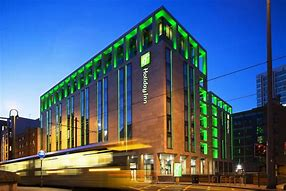
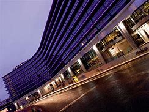
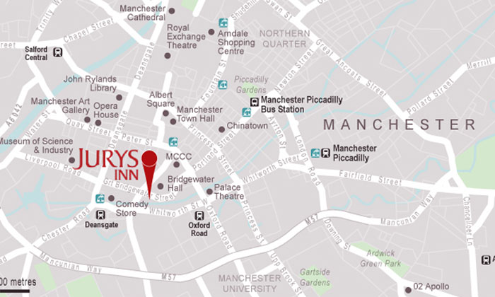

HOME THINGSTODO FOODANDDRINK SHOPPING WHERETOSAY
 Greater Manchester offers a wide range of accommodation, from unique boutique hotels and luxury pads to beautiful countryside settings and cosy family hideaways, there’s something to suit every need and taste. With luxury hotels such as The Edwardian Manchester set in the historic old Free Trade Hall, the Kimpton Clocktower Hotel, Stock Exchange Hotel, and Hyatt Regency, there are hotels oozing class and style in Manchester. Try out the Eclectic Hotels Collections with the likes of the Great John Street Hotel, set within a former schoolhouse and the King Street Townhouse within an impressive Italian renaissance building, with rooftop infinity pool. If you’re on a budget, why not try the centrally located Pendulum Hotel with contemporary rooms that are value for money. 